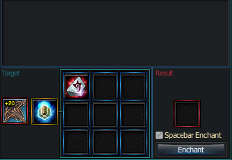
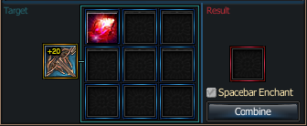
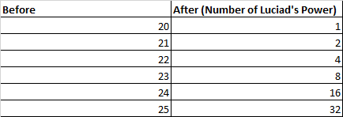

← Back to Home
Luciad’s Power & Enchantment Guide
Enchantment above +20 has changed. Existing equipment at +21 and higher was converted automatically — stats remain the same.
Reaching +20
When a Rank 7 piece of equipment reaches +20, it gains x1 Luciad’s Power.
Increasing Further (Beyond +20)
To increase stats past +20, combine:
- Luciad’s Power Stone: Weapon or Luciad’s Power Stone: Armor
- Luciad’s Pure Cube — drops from all bosses level 150 or above

Combination — using Luciad’s Power Stone + Luciad’s Pure Cube
Obtaining Luciad’s Power Stones
Luciad’s Power Stones are obtained by extracting Luciad’s Power from a +20 food item using a Luciad’s Power Extractor (purchased from the Smithy for 200,000,000 Rupees).
Extraction rules:
- One Extractor is needed per 1 Luciad’s Power stored in the equipment.
- 32 Luciad’s Power stored = 32 Extractors needed.
- The equipment used to extract will be destroyed after extraction.
- You can only extract the full amount of Luciad’s Power stored — partial extraction is not possible.

Extraction — converting a +20 food item into a Luciad’s Power Stone
Enchantment Changes Overview

Summary of enchantment changes